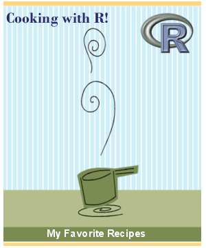

Spatial Data Analysis with R
Society for Conservation GIS, July 2020
Welcome and Part 1 Review 
Welcome and Part 1 Review


Chat Window
Best place for questions and comments during the presentations
Post-workshop Q&A
Anything else!

+ foundational concepts
+ code recipes
+ working examples
+ practice
+ a good search engine
functional pRoficiency!

Participants from Part 1
What city are you from, and what is your favorite invertebrate?
Complete this form for our Geocoding Exercise:
https://forms.gle/SAbmxXmMdpihGvkQ9